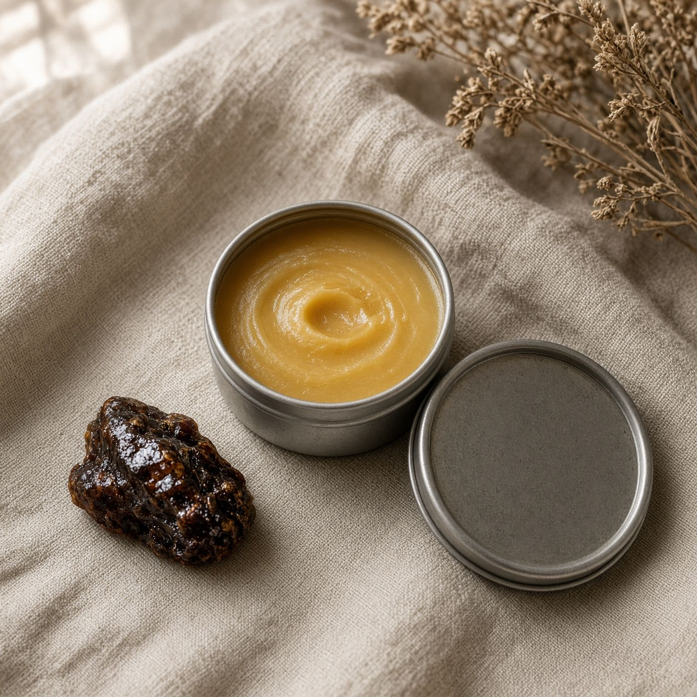

BalmFor peopleFaith
Faith · Scripture Garden
Bethany Balm
Lavender and frankincense
Named for the house at Bethany. Lavender and frankincense are what is in the tin. A cosmetic for dry hands. It is not nard, not a sacrament, and not an anointing oil.
Named for the house at Bethany. Lavender and frankincense. Not nard.
$22
Opening soon. Ordering is not open yet. A basket stays on this browser only — there is no checkout, and we will never ask for a card on this site.
Heat-sensitive. Candles, wax melts, and balms may wait for cooler shipping weather once ordering opens. We do not promise heat-proof delivery.
- Scent
- Lavender and frankincense
- Size
- 1.7 oz / 48 g
- What’s in it
- Beeswax, Shea wax, Olive oil, Grass-fed tallow, Vitamin E, Lavender essential oil, Frankincense essential oil
- What it is for
- Softens dry skin; Cosmetic skin balm
- Care
- A pea-size warms between palms. Keep the lid on. External use only.